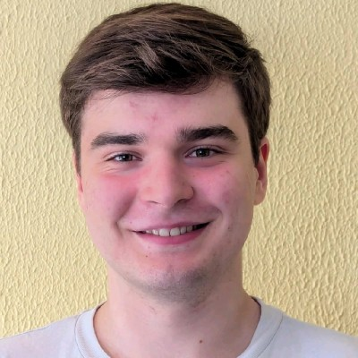

About Me
I’m an MPhys Astrophysics student at the University of Liverpool with a special interest in compact objects, particularly neutron stars.
Research
IFJ PAN – Kraków, Poland
Summer 2025 Internship under Dr. David Álvarez Castillo
Applied a Fisher Information Matrix framework to estimate tidal-deformability uncertainties in binary neutron-star systems.
Converted a Tolman–Oppenheimer–Volkoff (TOV) solver from Fortran to Python, computed mass–radius and tidal-deformability relations,
and compared results to GW170817 data.
Teide Observatory – Tenerife, Spain
Observational fieldwork at the IAC’s Teide Observatory. Conducted multi-band imaging and constructed HR diagrams.
Independent Research
Independent outside of my academic studies. Currently working on using archived optical observations to generate light curves of transitional millisecond pulsars and analyse them.
Curriculum Vitae
My CV outlines my academic background, research experience, and technical skills in astrophysics.
Contact
Email: cadenphillips05@hotmail.com
LinkedIn: linkedin.com/in/caden-phillips
GitHub: github.com/AstroCaden